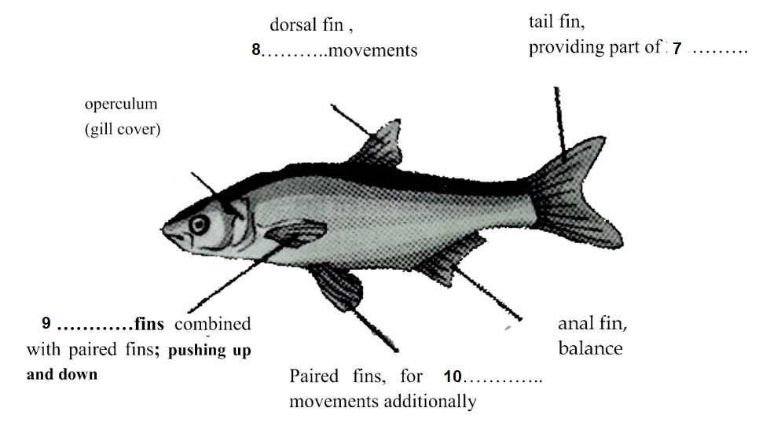

Part 1
READING PASSAGE 1
You should spend about 20 minutes on Questions 1 -13, which are based on Reading Passage 1 below.

Undersea Movement
A
The underwater world holds many challenges. The most basic of these is movement. The density of water makes it difficult for animals to move. Forward movement is a complex interaction of underwater forces. Additionally, water itself has movement. Strong currents carry incredible power that can easily sweep creatures away. The challenges to aquatic movement result in a variety of swimming methods, used by a wide range of animals. The result is a dazzling underwater ballet.
B
Fish rely on their skeleton, fins, and muscles to move. The primary function of the skeleton is to aid movement of other parts. Their skull acts as a fulcrum and their vertebrae act as levers. The vertebral column consists of a series of vertebrae held together by ligaments, but not so tightly as to prevent slight sideways movement between each pair of vertebrae. The whole spine is, therefore, flexible. The skull is the only truly fixed part of a fish. It does not move in and off itself but acts as a point of stability for other bones. These other bones act as levers that cause movement of the fish’s body.
C
While the bones provide the movement, the muscles supply the power. A typical fish has hundreds of muscles running in all directions around its body. This is why a fish can turn and twist and change directions quickly. The muscles on each side of the spine contract in a series from head to tail and down each side alternately, causing a wave-like movement to pass down the body. Such a movement may be very pronounced in fish such as eels, but hardly perceptible in others, e.g. mackerel. The frequency of the waves varies from about 50/min in the dogfish to 170/min in the mackerel. The sideways and backward thrust of the head and body against the water results in the resistance of the water pushing the fish sideways and forwards in a direction opposed to the thrust. When the corresponding set of muscles on the other side contracts, the fish experiences a similar force from the water on that side. The two sideways forces are equal and opposite unless the fish is making a turn, so they cancel out, leaving the sum of the two forward forces
D
The muscles involved in swimming are of two main types. The bulk of a fish’s body is composed of the so-called white muscle, while the much smaller areas at the roots of the fins and in a strip along the centre of each flank comprise red muscle. The red muscle receives a good supply of blood and contains ampler quantities of fat and glycogen, the storage form of glucose, which is used for most day-to-day swimming movements. In contrast, the white muscle has a poor blood supply and few energy stores, and it is used largely for short-term, fast swimming. It might seem odd that the body of an animal which adapts adapted so efficiently to its environment should be composed almost entirely of a type of muscle it rarely uses. However, this huge auxiliary power pack carried by a fish is of crucial significance if the life of the fish is threatened - by a predator, for instance - because it enables the fish to swim rapidly away from danger.
E
The fins are the most distinctive features of a fish, composed of bony spines protruding from the body with skin covering them and joining them together, either in a webbed fashion, as seen in most bony fish, or more similar to a flipper, as seen in sharks. These usually serve as a means for the fish to swim. But it must be emphasized that the swimming movements are produced by the whole of the muscular body, and in only a few fish do the fins contribute any propulsive force! Their main function is to control the stability and direction of the fish: as water passes over its body, a fish uses its fins to thrust in the direction it wishes to go.
F
Fins located in different places on a fish serve different purposes, such as moving forward, turning, and keeping an upright position. The tail fin, in its final lash may contribute as much as 40 per cent of the forward thrust. The median fins, that is, the dorsal, anal and ventral fins, control the rolling and yawing movements of the fish by increasing the vertical surface area presented to the water. The paired fins, pectoral and pelvic act as hydroplanes and control the pitch of the ash, causing it to swim downwards or upwards according to the angle to the water at which they are held by their muscles. The pectoral fins lie in front of the centre of gravity and, being readily mobile, are chiefly responsible for sending the ash up or down. Paired fins, in addition to being used for stopping and stabilizing, are also essential for other functions.
The swimming speed of fish is not so fast as one would expect from watching their rapid movements in aquaria or ponds. Tuna seems to be the fastest at 44 mph, trout are recorded as doing 23 mph, pike 20 mph for short bursts and roach about 10 mph, while the majority of small fish probably do not exceed 2 or 3 mph. Many people have attempted to make accurate measurements of the speed at which various fish swim, either by timing them over known distances in their natural environment or by determining their performance in man-made swimming channels. From these studies, we can broadly categorise fish into four groups: “sneakers”, such as eels that are only capable of slow speeds but possess some staying power; “stayers”, that can swim quite fast over long periods; “sprinters” that can generate fast bursts of speed (e.g. pike); and “crawlers” that are sluggish swimmers, although they can accelerate slightly (bream, for example).
H
One type of sailfish is considered to be the fastest species of fish over short distances, achieving 68 mph over a three-second period, and anglers have recorded speeds in excess of 40 mph over longer periods for several species of tuna. One is likely to consider a fish’s swimming capabilities in relation to its size. However, it is generally true that a small fish is a more able swimmer than a much larger one. On the other hand in terms of speed in miles per hour, a big fish will, all other things being equal, be able to swim faster than a smaller fish.
Part 2
READING PASSAGE 2
You should spend about 20 minutes on Questions 14-26, which are based on Reading Passage 2 below.

Knowledge in medicine
A
What counts as knowledge? What do we mean when we say that we know something? What is the status of different kinds of knowledge? In order to explore these questions, we are going to focus on one particular area of knowledge – medicine.
B
How do you know when you are ill? This may seem to be an absurd question. You know you are ill because you feel ill; your body tells you that you are ill. You may know that you feel pain or discomfort but knowing you are ill is a bit more complex. At times, people experience the symptoms of illness, but in fact, they are simply tired or over-worked or they may just have a hangover. At other times, people may be suffering from a disease and fail to be aware of the illness until it has reached a late stage in its development. So how do we know we are ill, and what counts as knowledge?
C
Think about this example. You feel unwell. You have a bad cough and always seem to be tired. Perhaps it could be stress at work, or maybe you should give up smoking. You feel worse. You visit the doctor who listens to your chest and heart, takes your temperature and blood pressure, and then finally prescribes antibiotics for your cough.
D
Things do not improve but you struggle on thinking you should pull yourself together, perhaps things will ease off at work soon. A return visit to your doctor shocks you. This time the doctor, drawing on years of training and experience, diagnoses pneumonia. This means that you will need bed rest and a considerable time off work. The scenario is transformed. Although you still have the same symptoms, you no longer think that these are caused by pressure at work. You know have proof that you are ill. This is the result of the combination of your own subjective experience and the diagnosis of someone who has the status of a medical expert. You have a medically authenticated diagnosis and it appears that you are seriously ill; you know you are ill and have the evidence upon which to base this knowledge.
E
This scenario shows many different sources of knowledge. For example, you decide to consult the doctor in the first place because you feel unwell – this is personal knowledge about your own body. However, the doctor’s expert diagnosis is based on experience and training, with sources of knowledge as diverse as other experts, laboratory reports, medical textbooks and years of experience.
F
One source of knowledge is the experience of our own bodies; the personal knowledge we have of changes that might be significant, as well as the subjective experiences are mediated by other forms of knowledge such as the words we have available to describe our experience, and the common sense of our families and friends as well as that drawn from popular culture. Over the past decade, for example, Western culture has seen a significant emphasis on stress-related illness in the media. Reference to being ‘stressed out’ has become a common response in daily exchanges in the workplace and has become part of popular common-sense knowledge. It is thus not surprising that we might seek such an explanation of physical symptoms of discomfort.
G
We might also rely on the observations of others who know us. Comments from friends and family such as ‘you do look ill’ or ‘that’s a bad cough’ might be another source of knowledge. Complementary health practices, such as holistic medicine, produce their own sets of knowledge upon which we might also draw in deciding the nature and degree of our ill health and about possible treatments.
H
Perhaps the most influential and authoritative source of knowledge is the medical knowledge provided by the general practitioner. We expect the doctor to have access to expert knowledge. This is socially sanctioned. It would not be acceptable to notify our employer that we simply felt too unwell to turn up for work or that our faith healer, astrologer, therapist or even our priest thought it was not a good idea. We need an expert medical diagnosis in order to obtain the necessary certificate if we need to be off work for more than the statutory self-certification period. The knowledge of the medical sciences is privileged in this respect in contemporary Western culture. Medical practitioners are also seen as having the required expert knowledge that permits them legally to prescribe drugs and treatment to which patients would not otherwise have access. However, there is a range of different knowledge upon which we draw when making decisions about our own state of health.
I
However, there is more than existing knowledge in this little story; new knowledge is constructed within it. Given the doctor’s medical training and background, she may hypothesize ‘is this now pneumonia?’ and then proceed to look for evidence about it. She will use observations and instruments to assess the evidence and – critically – interpret it in light of her training and experience. This results in new knowledge and new experience both for you and for the doctor. This will then be added to the doctor’s medical knowledge and may help in the future diagnosis of pneumonia.
Part 3
READING PASSAGE 3
You should spend about 20 minutes on Questions 28 - 40, which are based on Reading Passage 3 below.

Spider silk 2
A strong, light bio-material made by genes from spiders could transform construction and industry
A
Scientists have succeeded in copying the silk-producing genes of the Golden Orb Weaver spider and are using them to create a synthetic material which they believe is the model for a new generation of advanced bio-materials. The new material, biosilk, which has been spun for the first time by researchers at DuPont, has an enormous range of potential uses in construction and manufacturing.
B
The attraction of the silk spun by the spider is a combination of great strength and enormous elasticity, which man-made fibres have been unable to replicate. On an equal-weight basis, spider silk is far stronger than steel and it is estimated that if a single strand could be made about 10m in diameter, it would be strong enough to stop a jumbo jet in flight. A third important factor is that it is extremely light. Army scientists are already looking at the possibilities of using it for lightweight, bulletproof vests and parachutes.
C
For some time, biochemists have been trying to synthesise the drag-line silk of the Golden Orb Weaver. The drag-line silk, which forms the radial arms of the web, is stronger than the other parts of the web and some biochemists believe a synthetic version could prove to be as important a material as nylon, which has been around for 50 years, since the discoveries of Wallace Carothers and his team ushered in the age of polymers.
D
To recreate the material, scientists, including Randolph Lewis at the University of Wyoming, first examined the silk-producing gland of the spider. ‘We took out the glands that produce the silk and looked at the coding for the protein material they make, which is spun into a web. We then went looking for clones with the right DNA,’ he says.
E
At DuPont, researchers have used both yeast and bacteria as hosts to grow the raw material, which they have spun into fibres. Robert Dorsch, DuPont’s director of biochemical development, says the globules of protein, comparable with marbles in an egg, are harvested and processed. ‘We break open the bacteria, separate out the globules of protein and use them as the raw starting material. With yeast, the gene system can be designed so that the material excretes the protein outside the yeast for better access,’ he says.
F
‘The bacteria and the yeast produce the same protein, equivalent to that which the spider uses in the draglines of the web. The spider mixes the protein into a water-based solution and then spins it into a solid fibre in one go. Since we are not as clever as the spider and we are not using such sophisticated organisms, we substituted man-made approaches and dissolved the protein in chemical solvents, which are then spun to push the material through small holes to form the solid fibre.’
G
Researchers at DuPont say they envisage many possible uses for a new biosilk material. They say that earthquake-resistant suspension bridges hung from cables of synthetic spider silk fibres may become a reality. Stronger ropes, safer seat belts, shoe soles that do not wear out so quickly and tough new clothing are among the other applications. Biochemists such as Lewis see the potential range of uses of biosilk as almost limitless. ‘It is very strong and retains elasticity: there are no man-made materials that can mimic both these properties. It is also a biological material with all the advantages that have over petrochemicals,’ he says.
H
At DuPont’s laboratories, Dorsch is excited by the prospect of new super-strong materials but he warns they are many years away. ‘We are at an early stage but theoretical predictions are that we will wind up with a very strong, tough material, with an ability to absorb shock, which is stronger and tougher than the man-made materials that are conventionally available to us,’ he says.
I
The spider is not the only creature that has aroused the interest of material scientists. They have also become envious of the natural adhesive secreted by the sea mussel. It produces a protein adhesive to attach itself to rocks. It is tedious and expensive to extract the protein from the mussel, so researchers have already produced a synthetic gene for use in surrogate bacteria.
Part 1
Questions 1-6
The Passage has 8 paragraphs A-H.
Which paragraph contains the following information?
Write the appropriate letter, A-H, in boxes 1-6 on your answer sheet.
1. categorizations of fish by swimming speed
2. an example of fish capable of maintaining fast swimming for a long time
3. how fish control stability
4. frequency of the muscle movement of fish
5. a mechanical model of fish skeleton
6. energy storage devices in a fish
Questions 7-10
The diagram below gives information about fish fins and their purposes.
Complete the diagram with NO MORE THAN THREE WORDS from the passage for each blank
Write your answers in boxes 7-10 on your answer sheet.
7
8
9
10

Questions 11-13
Complete the summary below using NO MORE THAN THREE WORDS from the passage for each blank.
Write your answers in boxes 11-13 on your answer sheet.
{OPTION}
Two types of muscles are involved in fish swimming. The majority of a fish’s body comprises the 11 , and the red muscle is found only at the roots of the fins and in a strip along the centre of each flank. For most of its routine movements, the fish uses a lot of its 12 saved in body, and white muscle is mostly used for short-term, fast swimming, such as escaping from 13 .
Part 2
Questions 14-19
Complete the table
Choose NO MORE THAN THREE WORDS from the passage for each answer.
Write your answers in boxes 14-19 on your answer sheet
Source of knowledge | Examples |
Personal experience | Symptoms of a 14 and tiredness Doctor’s measurement by taking 15 and temperature Common judgment from 16 around you |
Scientific evidence | Medical knowledge from the general 17 . e.g. doctor’s medical 18 Examine the medical hypothesis with the previous drill and 19 |
Questions 20 - 27
The Reading Passage has nine paragraphs A-I
Which paragraph contains the following information?
Write the correct letter A-I, in boxes 20-27 on your answer sheet.
| A. | A | |
| B. | B | |
| C. | C | |
| D. | D | |
| E. | E | |
| F. | F | |
| G. | G | |
| H. | H | |
| I. | I |
20. the contrast between the nature of personal judgment and the nature of doctor’s diagnosis
21. a reference of culture about pressure
22. sick leave will not be permitted without the professional diagnosis
23. how doctors’ opinions are regarded in society
24. the illness of patients can become part of new knowledge
25. a description of knowledge drawn from non-specialized sources other than personal knowledge
26. an example of collective judgment from personal experience and professional doctor
27. a reference that some people do not realize they are ill
Part 3
Questions 28-32
Reading Passage 1 has nine paragraphs, A-I
Which paragraph contains the following information?
Write the correct letter, A-I, in boxes 28-32on your answer sheet.
| A. | A | |
| B. | B | |
| C. | C | |
| D. | D | |
| E. | E | |
| F. | F | |
| G. | G | |
| H. | H | |
| I. | I |
28. A comparison of the ways two materials are used to replace silk-producing glands
29. Predictions regarding the availability of the synthetic silk
30. Ongoing research into other synthetic materials
31. The research into the part of the spider that manufactures silk
32. The possible application of the silk in civil engineering2
Questions 33-37
Complete the flow-chart below.
Choose ONE WORD ONLY from the passage for each answer.
Write your answers in boxes 33-37 on your answer sheet.
| Synthetic gene grown in 33 or 34 |
| ↓ |
| globules of 35 . |
| ↓ |
| dissolved in 36 solvents |
| ↓ |
| passed through 37 |
| ↓ |
| to produce a solid fibre |
Questions 38-40
Do the following statements agree with the information given in Reading Passage?
In boxes 38-40 on your answer sheet, write
| TRUE. | if the statement agrees with the information | |
| FALSE. | if the statement contradicts the information | |
| NOT GIVEN. | If there is no information on this |
38. Biosilk has already replaced nylon in parachute manufacture.
39. The spider produces silk of varying strengths.
40. Lewis and Dorsch co-operated in the synthetic production of silk.